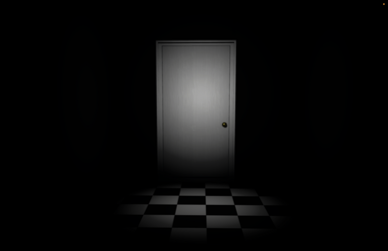

Projects
This project was born out of a desire to redefine artistic expression for visually impaired individuals, utilizing the principles of cognitive extension through touch, tactile communication, and multisensory integration. During the 2025 MIT Reality Hackathon, we aimed to create a tool that not only empowers users to create but also enables them to connect with their work in a deeply immersive and accessible way. By incorporating haptic feedback and spatial mapping, we sought to bridge the gap between art and accessibility, ensuring inclusivity for all creators.
Players are placed in a metaphysical 'internship' in the afterlife, where they must evaluate the fates of souls. Designed for hand-tracking and immersive interaction, the experience draws on dark humor and social commentary, immersing players in a uniquely unsettling narrative space. Created in Unity with Meta Quest support.
"I Am You" invites players to inhabit the perspectives of different characters in emotionally charged scenarios. By swapping avatars and engaging with reactive dialogue, users experience the power of point-of-view and bias. Built with Unity XR Interaction Toolkit, this project emphasizes narrative design and social impact in immersive media.

This fast-paced VR comedy game puts players in charge of herding rogue chickens using only their hands. Featuring flocking algorithms, gesture recognition, and real-time physics, "Return of the Chickens" delivers slapstick action and unpredictable gameplay moments. Designed for Meta Quest standalone performance with no controllers required.
Presented as an ambient AR installation, users are prompted to answer philosophical questions from an unseen interviewer. The piece overlays digital text and animated visuals on physical environments, encouraging reflection and stillness. It fuses poetry, visual design, and interaction in an artistic mixed reality context.
Accessible via mobile browser, this WebAR project allows users to view animated digital art layered over real-world surfaces using their camera. It explores the ephemeral nature of creativity and the evolving boundaries between physical and digital art mediums.
In this eerie tower ascent game, players use a VR skee-ball mechanic to destroy cursed structures while dodging grotesque frog monsters. The experience merges nostalgic gameplay with an unsettling horror aesthetic, blending humor and fear in a surreal, interactive spectacle.
Players journey through haunting dreamscapes as they piece together fragments of a fractured mind. Featuring eerie sound design, shifting architecture, and immersive metaphors, this project invites reflection on themes of loss and identity in surreal VR spaces.

Race through Olympian trials with absurd physics, divine obstacles, and unpredictable environments. This myth-inspired game challenges players to earn the title of the gods’ fastest (and possibly most reckless) driver. Designed for fast-paced, replayable fun.
Created during a study abroad in Japan, this eerie 3D platformer explores themes of disorientation and nostalgia. Players wander through dreamlike alleys, haunted vending machines, and mechanical spirits in search of escape—or meaning.
This personal, historically grounded XR piece reflects on generational memory and the displacement of millions during the Partition. Based on oral history and family testimony, it blends interactive storytelling with archival textures and spatial audio to honor lost voices.
Players investigate the disappearance of a park botanist by solving puzzles hidden among plants, creatures, and interactive environmental clues. Designed for AR and VR, the project combines natural exploration with mystery storytelling.
*Walk Among Us* lets users explore historically significant or culturally rich environments in AR and VR. Designed as an educational tool, it allows learners to interact with virtual reconstructions, layered narratives, and annotated content to deepen understanding.
Set in a liminal, ghostly space, this interactive visual novel invites players to shape the story through dialogue and moral choices. The experience blends visual storytelling, character-driven plotlines, and voice-acted scenes to explore themes of justice, guilt, and redemption.
This experimental XR demo invites users to traverse metaphorical environments representing inner fears and memories. Using light puzzles and symbolic design, *Curse of the Mind* creates an emotionally driven narrative space grounded in introspection and personal healing.